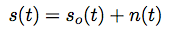

Gravitational Waves Data Analysis
Shahnawaz Ahmed
25 November 2016
LIGO
The Laser Interferometer Gravitational-Wave Observatory
Two observatories - Hanford and Livingston
Michelson interferometers of arm length around 4 km
Fabry Perot addition to increase the effective arm length
Detects strain in mirror position by interferometry
Michelson Interferometer

Fabry Perot addition

Principle
Speed of light is constant
Difference in path lengths leds to interference
Different from the antena principle, hence no relation to lengths
Longer path gives better strain precision
Data
- Time series data of strain

Noise
More than 99 % data is noise
Seismic Noise
Thermal Noise
Photon shot noise
Muon Shower noise
Spectral density
- Fourier transform of signal. (ASD)
Noise removal
Whitening
Notch filtering
Linear time invariant systems
Relationship between input signal and output
Characterized by impulse response of system

Convolution
- Output given by convolution of input with impulse response

- Convolution theorem : Convolution is product in frequency domain

Filters
- Filters are nothing but LTI systems with specific impulse response
Low pass filter
- Ideal transfer function in frequency domain is rect(x)
Low pass filter
- Filter transfer function with Bandwith B is :
Matched filter
- Signal corrupted by linear noise

- Maximize the SNR
Matched filter
- Transfer function is same as the know signal

Matched filter
- Output is the desired signal

Data Analysis
- ASD of data
Data Analysis
- Whitened data
Data Analysis
- Matched waveform